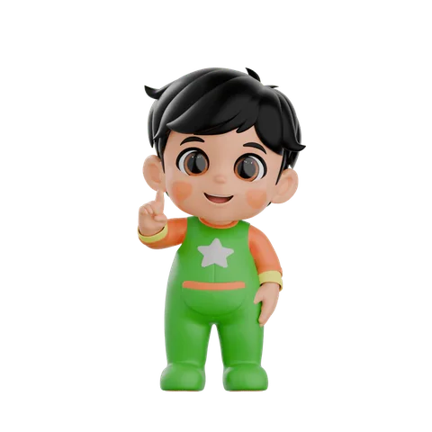

Support
Bantuan
How can we help?
Ada yang bisa kami bantu?
BabyMo Craft is a cozy island adventure where children learn the hijaiyah letters, Iqro, wudu and prayer, English words and simple maths with Baby Mo.
BabyMo Craft adalah petualangan di pulau yang seru, tempat anak-anak belajar huruf hijaiyah, Iqro, wudhu dan sholat, kata bahasa Inggris, dan berhitung bersama Baby Mo.

Write to us
Hubungi kami
Questions, ideas or something not working? We read every message.
Ada pertanyaan, ide, atau sesuatu yang tidak berjalan? Kami membaca setiap pesan.
🏝️Free, and Full BabyMo CraftGratis, dan BabyMo Craft Lengkap
Free for everyone:
Gratis untuk semua:
Full BabyMo Craft — one in-app purchase in the iPhone and iPad app, made by a grown-up. No ads, no subscription:
BabyMo Craft Lengkap — sekali bayar di aplikasi iPhone dan iPad, oleh orang tua. Tanpa iklan, tanpa langganan:
Questions parents ask
Pertanyaan orang tua
Where are the settings and the learning report?Di mana pengaturan dan laporan belajar?
Menu → Settings → “For parents”. A grown-up answers a sum to open it.
Menu → Pengaturan → “Untuk orang tua”. Orang dewasa menjawab soal hitungan untuk membukanya.
How do I limit play time?Bagaimana membatasi waktu bermain?
In “For parents”, choose a daily play limit. Baby Mo starts a calm bedtime wind-down before it ends, and the next day it starts again by itself.
Di “Untuk orang tua”, pilih batas waktu bermain harian. Baby Mo mulai bersiap tidur dengan tenang sebelum waktunya habis, dan esok harinya waktu bermain mulai lagi dengan sendirinya.
How do we get to the race tracks, the stadium or the horse farm?Bagaimana ke sirkuit, stadion, atau peternakan kuda?
Open the book → Map → “Fun places” and tap one.
Buka buku → Peta → “Tempat seru”, lalu ketuk salah satunya.
What comes after the 28 letters?Apa setelah 28 huruf?
The Iqro journey: vowel marks, tanwin and long vowels, reading words, and short surahs, all read aloud by Baby Mo. The golden compass points to each lesson book. Finding all 28 letters also opens 10 hero suits.
Perjalanan Iqro: harakat, tanwin dan bacaan panjang, membaca kata, dan surat pendek, semuanya dibacakan oleh Baby Mo. Kompas emas menunjuk ke setiap buku pelajaran. Menemukan semua 28 huruf juga membuka 10 kostum pahlawan.
We bought Full BabyMo Craft. How do we get it on a new device or after reinstalling?Kami sudah membeli BabyMo Craft Lengkap. Bagaimana di perangkat baru atau setelah instal ulang?
In “For parents”, tap “Restore purchase” (it is also on the unlock card). Use the same Apple ID that made the purchase.
Di “Untuk orang tua”, ketuk “Pulihkan pembelian” (juga ada di kartu buka kunci). Gunakan Apple ID yang sama dengan yang dipakai membeli.
My child’s Apple ID uses Ask to Buy.Apple ID anak saya memakai Ask to Buy.
The card says it is waiting for approval; the island opens by itself as soon as a parent approves.
Kartu akan menunjukkan bahwa pembelian menunggu persetujuan; pulau terbuka dengan sendirinya begitu orang tua menyetujui.
Is our progress saved?Apakah kemajuan kami tersimpan?
Yes, on the device. You can also save it to a file in “For parents”.
Ya, di perangkat. Anda juga bisa menyimpannya ke file di “Untuk orang tua”.
Does the game collect data?Apakah permainan ini mengumpulkan data?
No. See the privacy policy.
Tidak. Lihat kebijakan privasi.
Emoji pictures: Fluent Emoji by Microsoft, MIT licence (see emoji/LICENSE.txt).
Town list for prayer times: GeoNames, CC BY 4.0.
Gambar emoji: Fluent Emoji oleh Microsoft, lisensi MIT (lihat emoji/LICENSE.txt).
Daftar kota untuk waktu sholat: GeoNames, CC BY 4.0.